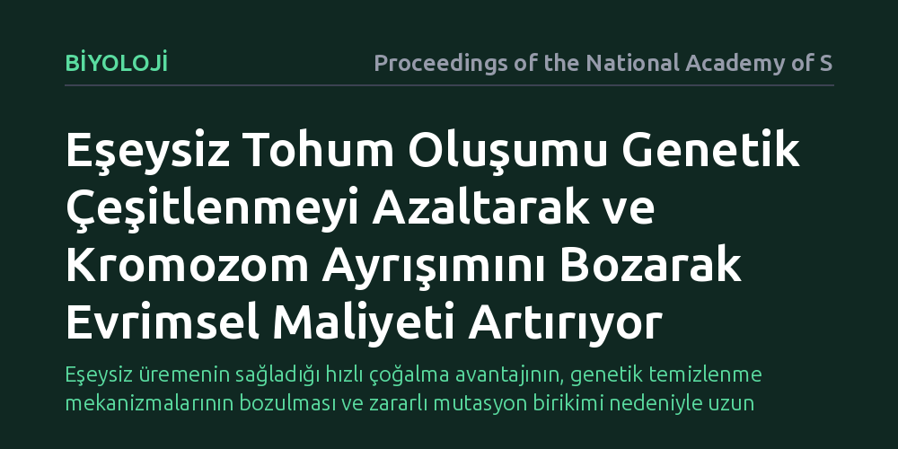

BIYOLOJI · Proceedings of the National Academy of Sciences · 2026-10-19
Araştırma, bitkilerde eşeyli üremenin azalması ve tohumla eşeysiz çoğalmanın (apomiksis) genetik çeşitlilik üzerindeki bedellerini inceledi. Bulgular, apomiksisin genetik rekombinasyon verimini düşürdüğünü, kromozom ayrışımını bozduğunu ve zararlı mutasyon birikimini hızlandırdığını ortaya koydu.
Eşeysiz üremenin sağladığı hızlı çoğalma avantajının, genetik temizlenme mekanizmalarının bozulması ve zararlı mutasyon birikimi nedeniyle uzun vadede türün aleyhine işleyen ciddi bir evrimsel bedeli olduğunu gösterir.

Doğada eşeyli üreme, genetik materyalin yeniden karıştırılmasını sağlayarak hem faydalı mutasyonların bir araya gelmesine hem de zararlı mutasyonların elenmesine imkan tanır. Ancak eşeyli üreme, eş bulma zorunluluğu ve yalnızca dişilerin doğrudan yavru üretebilmesi gibi ciddi enerji maliyetleri barındırır. Buna karşılık tohumla eşeysiz çoğalma (apomiksis), bitkilerin döllenme olmadan tohum üreterek kendilerinin birebir kopyalarını hızla yaymalarına izin verir.
Peki, kısa vadede bu kadar avantajlı görünen bir mekanizma neden bitki dünyasının tamamına hakim olamamıştır? Temel soru tam da burada yatmaktadır: Bir tür eşeyli üremeyi tamamen ya da kısmen terk ettiğinde, genetik bütünlüğünü korumakta ne gibi zorluklarla karşılaşır ve döllenmesiz üremenin gizli evrimsel maliyeti nedir?
Araştırmacılar, apomiksisin getirdiği evrimsel dinamikleri anlamak için apomiktik bitki sistemlerinde rekombinasyon süreçlerini ve kromozom davranışlarını mercek altına aldı. Özellikle bazı apomiktik bitkilerin tamamen eşeysiz olmak yerine kısmi eşeylilik gösterebilmesi ve polen yoluyla zararlı mutasyonları ayıklayabilmesi, karşılaştırmalı bir zemin sundu.
İncelemede, eşeyli üreme payı azalan popülasyonlarda genetik çeşitlenmenin omurgası olan krossing-over sıklığı ve hücre bölünmesindeki kromozom ayrışım düzeni incelendi. Moleküler genetik veriler ve evrimsel modeller aracılığıyla, döllenmesiz üremenin genom üzerindeki baskısı ve zararlı mutasyon yükü takip edildi.
Çalışmanın ortaya koyduğu en temel bulgu, apomiksisin genetik rekombinasyon verimini düşürdüğüdür. Eşeyli üreme kısıtlandığında kromozomlar arasındaki genetik parça değişimi işlevini kaybeder. Bunun sonucunda genom, zararlı mutasyonları sağlıklı genlerden ayıklayamaz hale gelir ve bozulmuş genetik varyantlar nesiller boyunca birikmeye başlar.
Bir diğer kritik bulgu ise kromozom ayrışım mekanizmasının sekteye uğramasıdır. Döllenmesiz tohum oluşumunun dayattığı hücresel süreçler, kromozomların düzenli ve dengeli dağılmasını engelleyerek genetik kararsızlığı tetikler. Her ne kadar kısmi eşeylilik bazı türlerde bu etkiyi hafifletse de, eşeyli üremenin belirgin şekilde azaldığı durumlarda bu koruyucu denge bozulmaktadır.
Bu bulgular, biyolojinin en köklü sorularından biri olan eşeyli üremenin neden bu kadar yaygın korunduğuna berrak bir açıklama sunar. Apomiksis kısa vadede çevreye uyum sağlamış başarılı bir genotipin hızla çoğalmasını sağlasa da, uzun vadede türü genetik bir çıkmaza sürükler. Rekombinasyonun devre dışı kalması, genomun kendi içindeki zararlı mutasyonları temizleme kapasitesini ortadan kaldırır.
Ayrıca bulgular, tarımsal biyoteknolojide yüksek verimli melez bitkilerin tohumlarını klonlamak amacıyla yürütülen apomiksis aktarma çalışmalarına önemli bir ihtiyat payı getirmektedir. Rekombinasyon verimsizliği ve ayrışım bozuklukları hesaba katılmadığı takdirde, eşeysiz çoğaltılan hatlarda zamanla genetik kararsızlıkların ortaya çıkabileceği anlaşılmaktadır.